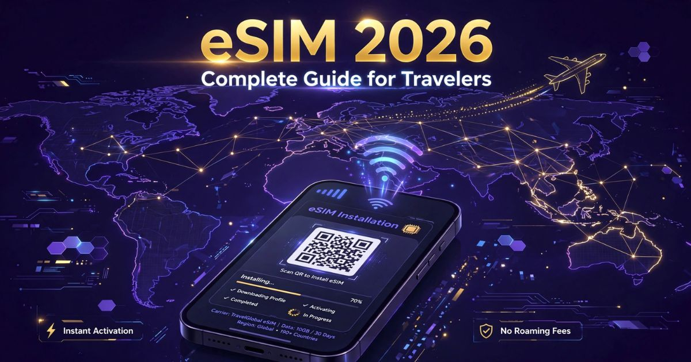

eSIM 2026: guia completo para viajar com internet no exterior
Introdução: a revolução da conectividade em viagens
Viajar para o exterior sempre foi sinônimo de preocupação com a conexão de internet. Por muitos anos, os viajantes dependiam de chips físicos comprados no aeroporto, roaming internacional caríssimo ou wi-fi precário em hotéis. Essa realidade mudou radicalmente com a chegada do eSIM (Embedded SIM), uma tecnologia que está revolucionando a forma como nos conectamos em viagens internacionais.
Em 2026, o eSIM já é a principal escolha de viajantes que buscam praticidade, economia e conectividade instantânea em mais de 200 países ao redor do mundo. Não importa se você vai passar um final de semana em Buenos Aires, uma semana em Paris ou um mês na Tailândia — o eSIM permite que você tenha internet no celular poucos minutos após o pouso, sem precisar trocar de chip, sem filas e sem taxas absurdas de roaming.
Neste guia completo, você vai descobrir tudo sobre o eSIM para viajantes: o que é, como funciona, quais são as vantagens em relação ao chip físico, quais dispositivos são compatíveis, os melhores provedores do mercado, os preços e planos disponíveis, e um passo a passo detalhado para ativar o eSIM no seu celular antes da viagem.
Nosso objetivo é mostrar que o eSIM é a solução mais inteligente, prática e econômica para quem quer viajar conectado. Adeus, chips físicos. Bem-vindo ao futuro das telecomunicações!
O que é eSIM e por que ele é tão importante para viajantes
O eSIM (Embedded SIM ou SIM Virtual) é uma tecnologia que substitui o tradicional chip físico de celular por um chip virtual integrado diretamente ao hardware do dispositivo. Em outras palavras, o eSIM é um chip digital que fica embutido no smartphone, tablet ou smartwatch, dispensando a necessidade de inserir um cartão SIM físico para se conectar às redes de telefonia móvel.
A grande diferença do eSIM para o chip tradicional é que ele pode ser programado remotamente por meio de um código QR ou aplicativo. Isso significa que você pode contratar um plano de dados de uma operadora local — em qualquer lugar do mundo — e ativá-lo no seu celular em questão de minutos, sem precisar sair de casa ou trocar o chip físico do aparelho.
Para o viajante, o eSIM representa uma revolução. Antes, ao chegar em um país estrangeiro, você precisava encontrar uma loja de telefonia, comprar um chip local, fazer o cadastro, esperar a ativação e, muitas vezes, lidar com barreiras linguísticas. Com o eSIM, você pode comprar e ativar seu plano de dados antes mesmo de embarcar, e ter internet funcionando assim que o avião pousar.
A tecnologia eSIM foi introduzida pela primeira vez em 2018 e, desde então, vem se expandindo rapidamente. Em 2026, quase todos os smartphones novos já são compatíveis com eSIM, e a tendência é que ele se torne o padrão nos próximos anos, tornando o chip físico uma relíquia do passado.

O eSIM permite conexão instantânea em qualquer país
Vantagens do eSIM para viajantes
O eSIM oferece uma série de vantagens que fazem dele a melhor opção para viajantes. Confira as principais:
Praticidade e comodidade — O eSIM permite que você contrate e ative um plano de dados em minutos, diretamente do seu celular, sem precisar ir a uma loja física, sem filas e sem burocracia. A ativação pode ser feita antes da viagem, garantindo que você já chegue ao destino conectado.
Economia financeira — Diferentemente do roaming internacional, que pode custar uma fortuna, o eSIM oferece planos de dados com preços locais, muito mais baratos. A economia pode chegar a 80% em relação ao roaming convencional.
Multiplicidade de planos — Com o eSIM, você pode ter vários planos ativos simultaneamente. Por exemplo, um plano para o Brasil e um plano para a Europa no mesmo celular, alternando entre eles conforme a necessidade.
Não perde o chip físico — Como o eSIM é virtual, você mantém o chip físico do Brasil ativo no celular. Isso significa que você pode receber chamadas e SMS no seu número brasileiro (sem custos, se o celular tiver Wi-Fi Calling) enquanto usa o eSIM para dados no exterior.
Cobertura global — Os provedores de eSIM oferecem planos para mais de 200 países, com cobertura em praticamente todas as regiões do mundo. Isso inclui destinos menos conhecidos, onde a compra de um chip físico seria difícil ou impossível.
Segurança — Como o eSIM é integrado ao dispositivo, ele não pode ser perdido ou danificado, ao contrário do chip físico que pode ser extraviado ou quebrado durante a viagem.
Sustentabilidade — A tecnologia eSIM reduz o consumo de plástico e os resíduos eletrônicos, já que elimina a necessidade de chips físicos descartáveis, que são produzidos em grande escala e geram impactos ambientais.
Como funciona o eSIM
O funcionamento do eSIM é simples e intuitivo, mesmo para quem não é muito familiarizado com tecnologia. Entenda como funciona na prática:
1. Verificação de compatibilidade — Primeiro, verifique se seu celular é compatível com eSIM. A maioria dos iPhones a partir do XR/SE 2020 e dos smartphones Android lançados após 2020 já tem suporte nativo. Consulte a lista completa na seção de dispositivos compatíveis.
2. Escolha do provedor — Selecione um provedor de eSIM entre as diversas opções disponíveis no mercado. Os principais oferecem aplicativos ou sites onde você pode escolher o destino, a quantidade de dados e a duração do plano.
3. Compra e pagamento — Faça a compra do plano pelo aplicativo ou site do provedor. O pagamento pode ser feito via cartão de crédito, PayPal ou Pix, dependendo da plataforma.
4. Ativação — Após a compra, você receberá um código QR ou um link de instalação por e-mail. Basta escanear o QR Code com a câmera do celular ou seguir as instruções no aplicativo para instalar o eSIM no dispositivo.
5. Configuração — O sistema operacional do celular vai guiar você pelos passos de configuração. Geralmente, é necessário selecionar o eSIM como linha principal para dados móveis e configurar a rede automaticamente.
6. Conexão — Pronto! O eSIM será ativado e você terá internet disponível. Em alguns casos, a ativação pode levar alguns minutos; em outros, ela é instantânea. Ao chegar no destino, o celular se conectará automaticamente à rede local.
Dica: A ativação do eSIM pode ser feita com o celular em modo avião ou com o Wi-Fi ligado, em casa, antes da viagem. Assim, ao chegar no destino, você já estará pronto para usar a internet.
Dispositivos compatíveis com eSIM
Em 2026, a lista de dispositivos compatíveis com eSIM cresceu significativamente. Confira se o seu celular está na lista:
iPhone (Apple):
- iPhone XR, XS e XS Max
- iPhone 11, 11 Pro e 11 Pro Max
- iPhone SE (2020, 2022 e 2023)
- iPhone 12, 12 Mini, 12 Pro e 12 Pro Max
- iPhone 13, 13 Mini, 13 Pro e 13 Pro Max
- iPhone 14, 14 Plus, 14 Pro e 14 Pro Max
- iPhone 15, 15 Plus, 15 Pro e 15 Pro Max
- iPhone 16 e modelos mais recentes
Samsung Galaxy:
- Samsung Galaxy S20, S21, S22, S23, S24, S25 e S26
- Samsung Galaxy Note 20 e Note 20 Ultra
- Samsung Galaxy Z Flip (todas as gerações)
- Samsung Galaxy Z Fold (todas as gerações)
- Samsung Galaxy A54, A55 e modelos superiores
Google Pixel:
- Google Pixel 3, 3 XL, 3a e 3a XL
- Google Pixel 4, 4 XL, 4a e 4a 5G
- Google Pixel 5, 6, 7, 8, 9 e modelos mais recentes
Motorola:
- Motorola Edge (2020, 2021, 2022, 2023, 2024, 2025, 2026)
- Motorola Razr (todas as gerações)
- Motorola G84, G85 e modelos superiores
Xiaomi:
- Xiaomi 12, 13, 14, 15 e 16
- Xiaomi 12T, 13T, 14T
- Xiaomi Redmi Note 13 e superiores (alguns modelos)
Outras marcas:
- OnePlus (modelos recentes)
- Oppo (modelos recentes)
- Realme (modelos recentes)
- Honor (modelos recentes)
Tablets e smartwatches:
- iPad Pro e iPad Air com suporte a eSIM
- Samsung Galaxy Tab com suporte a eSIM
- Apple Watch Série 4 em diante
- Samsung Galaxy Watch (modelos com LTE)
Principais provedores de eSIM para viajantes
O mercado de eSIM tem crescido rapidamente, e hoje existem diversas opções de provedores com planos para viajantes. Confira os principais:
Airalo — O Airalo é um dos provedores mais populares, com cobertura em mais de 200 países. Oferece planos regionais (Europa, América do Norte, Ásia) e planos globais. Os preços são competitivos e a ativação é fácil via QR Code. Diferencial: aplicativo intuitivo e planos com duração de 7 a 90 dias.
Holafly — Focado em viajantes, o Holafly oferece planos com dados ilimitados em diversos destinos, incluindo Europa, Estados Unidos, México e América Latina. O atendimento ao cliente é um dos diferenciais, com suporte em português 24 horas. Diferencial: dados ilimitados na maioria dos planos.
Nomad — Especializado em viagens, a Nomad oferece planos de dados em mais de 100 países, com ativação simples e app em português. Os planos podem ser comprados em até 30 dias antes da viagem. Diferencial: preços competitivos e planos de curta duração (3 a 30 dias).
Ubigi — Com forte presença na Europa e Ásia, a Ubigi oferece planos com boa relação custo-benefício e cobertura em 190 países. O app é simples e a ativação é rápida. Diferencial: planos mensais com dados generosos.
Flexiroam — Focado em viajantes globais, oferece planos regionais e globais com cobertura em mais de 140 países. Diferencial: planos que incluem chamadas e SMS, além de dados.
Dent Wireless — Provedor com planos em mais de 70 países, com dados que não expiram em 30 dias, podendo ser utilizados em múltiplas viagens. Diferencial: dados com validade estendida.
eSIM Go — Oferece planos para mais de 130 países, com preços acessíveis e ativação instantânea. Diferencial: suporte em português e planos personalizáveis.
Preços e planos de eSIM em 2026
Os preços dos planos de eSIM variam conforme o destino, a quantidade de dados e a duração. Confira uma tabela com valores médios praticados pelos principais provedores:
| Destino | Dados | Duração | Preço médio (US$) | Preço médio (R$)* |
|---|---|---|---|---|
| Europa (região) | 3 GB | 7 dias | US$ 15,00 | ~ R$ 82,00 |
| Europa (região) | 10 GB | 30 dias | US$ 37,00 | ~ R$ 203,00 |
| Estados Unidos | 3 GB | 7 dias | US$ 18,00 | ~ R$ 99,00 |
| Estados Unidos | 10 GB | 30 dias | US$ 42,00 | ~ R$ 231,00 |
| América Latina | 3 GB | 7 dias | US$ 12,00 | ~ R$ 66,00 |
| Ásia (região) | 5 GB | 15 dias | US$ 22,00 | ~ R$ 121,00 |
| Global | 1 GB | 7 dias | US$ 9,00 | ~ R$ 49,00 |
| Global | 5 GB | 30 dias | US$ 38,00 | ~ R$ 209,00 |
*Valores aproximados com base no câmbio de julho de 2026 (US$ 1,00 ≈ R$ 5,50).
Dica de economia: Para viagens que passam por vários países (Europa, Ásia), opte por planos regionais, que geralmente são mais baratos do que comprar um plano por país. Alguns provedores oferecem planos "multi-países" com ótimo custo-benefício.
Como ativar o eSIM no seu celular (passo a passo)
A ativação do eSIM é rápida e pode ser feita em casa, antes da viagem. Veja o passo a passo:
Passo 1 — Compre o plano
Acesse o site ou aplicativo do provedor escolhido, selecione o destino, a quantidade de dados e a duração do plano. Efetue o pagamento e aguarde o recebimento do QR Code por e-mail ou no próprio aplicativo.
Passo 2 — Escaneie o QR Code
No celular, vá em "Configurações" > "Conexões" > "Gerenciador de SIM" > "Adicionar plano móvel/eSIM". Escaneie o QR Code recebido. O celular reconhecerá automaticamente as configurações da rede.
Passo 3 — Configure o eSIM
Escolha qual linha será usada como principal para dados móveis (geralmente o eSIM para viagens internacionais). Mantenha o chip físico para chamadas e SMS do número brasileiro.
Passo 4 — Ative o roaming de dados
No celular, ative o "Roaming de dados" para o eSIM. Isso permitirá que o celular se conecte automaticamente à rede local ao chegar no destino. No iPhone, vá em "Configurações" > "Celular" > "Roaming de dados".
Passo 5 — Verifique a conexão
Ative o modo avião e desative algumas vezes para forçar a conexão à rede. Ao chegar no país de destino, o celular se conectará automaticamente.
Passo 6 — Pronto!
Você estará conectado com dados móveis. Lembre-se de que o eSIM não permite chamadas ou SMS, apenas dados. Use aplicativos como WhatsApp, Telegram e FaceTime para se comunicar.
Dica: Alguns provedores permitem a ativação por aplicativo sem QR Code, o que torna o processo ainda mais simples.
Dicas importantes para usar o eSIM em viagens
Para aproveitar ao máximo o eSIM durante sua viagem, siga estas dicas:
- Instale antes de viajar — Ative o eSIM antes do embarque, enquanto você está no Brasil. Assim, ao chegar ao destino, a conexão será automática.
- Configure o roteamento de chamadas — Se você quiser receber chamadas no número brasileiro, ative o Wi-Fi Calling e configure o roteamento para usar o número nacional.
- Desative o roaming do chip físico — Para evitar cobranças extras, desative o roaming de dados do chip brasileiro. Deixe apenas o eSIM ativo para dados.
- Use aplicativos de comunicação — Como o eSIM é apenas dados, utilize WhatsApp, Telegram, FaceTime ou Skype para chamadas e mensagens.
- Monitore o consumo de dados — Muitos provedores de eSIM oferecem aplicativos onde você pode acompanhar o consumo em tempo real, evitando exceder o limite contratado.
- Verifique a cobertura — Antes de comprar, confirme se o provedor oferece cobertura nas regiões que você vai visitar (incluindo áreas rurais, se for o caso).
- Compre com antecedência — Adquira o plano com alguns dias de antecedência para ter tempo de resolver qualquer problema na ativação.
O eSIM é a melhor invenção para viajantes na última década! Esqueça as filas em lojas de telefonia no aeroporto, os chips físicos que você perde no meio da viagem e o roaming internacional que custa os olhos da cara. Com o eSIM, você chega ao destino conectado em minutos, com preços justos e total praticidade. Viajar nunca foi tão fácil!
❓ Perguntas Frequentes sobre eSIM
O eSIM (Embedded SIM) é um chip digital integrado ao celular. Ele pode ser programado remotamente por meio de um QR Code, permitindo que você contrate um plano de dados de qualquer operadora do mundo sem precisar de um chip físico. O eSIM funciona como um chip virtual, ativado via software.
Não. O eSIM está disponível na maioria dos smartphones lançados a partir de 2020, como iPhones (XR em diante), Samsung Galaxy (S20 em diante), Google Pixel (3 em diante) e outros modelos. Verifique a compatibilidade nas configurações do seu celular.
Os preços variam conforme o destino e a quantidade de dados. Em média, um plano de 3 GB para a Europa custa cerca de US$ 15 (aproximadamente R$ 82), enquanto planos globais podem custar de US$ 9 a US$ 38. Consulte a tabela de preços no artigo para mais detalhes.
Sim! O WhatsApp funciona perfeitamente com eSIM, pois utiliza apenas dados móveis. Você pode enviar mensagens, fazer chamadas de áudio e vídeo normalmente, mantendo seu número brasileiro ativo.
Sim. Muitos celulares permitem armazenar múltiplos eSIMs e alternar entre eles conforme a necessidade. Você pode ter, por exemplo, um eSIM para o Brasil e outro para a Europa, ativando um de cada vez ou ambos simultaneamente.
A maioria dos provedores de eSIM oferece cobertura em mais de 150 países, incluindo Europa, América do Norte, América Latina, Ásia, Oceania e África. No entanto, é importante verificar a cobertura específica do provedor escolhido para o destino da sua viagem.
A ativação é simples: após comprar o plano, você recebe um QR Code. Escaneie-o em "Configurações" > "Conexões" > "Gerenciador de SIM" > "Adicionar plano móvel/eSIM". O celular configurará automaticamente a rede. O processo leva menos de 5 minutos.
Sim, mas não é a melhor opção. Muitos aeroportos vendem eSIMs, mas a preços elevados. O ideal é comprar e ativar o eSIM antes da viagem, com provedores online, que oferecem planos mais baratos e maior variedade.
Sim. O eSIM é tão seguro quanto um chip físico, com a vantagem de ser integrado ao dispositivo, o que reduz o risco de perda ou dano. Além disso, ele segue os mesmos padrões de criptografia e segurança das operadoras de telefonia tradicionais.